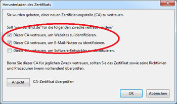
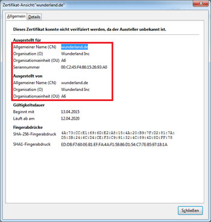

Anleitung
zum sicheren surfen in unserem Free-WLAN
Danach erhalten Sie folgende Meldung:

Hier bitte wie angezeigt die beiden ersten Kästchen aktivieren und mit "OK" bestätigen.
Sie können sich auch das zu installierende Sicherheitszertifikat anschauen, indem Sie auf "Ansicht" klicken.
Hier bitte darauf achten, dass dieses Zertifikat von uns ausgestellt wurde (siehe Bild).

Nach Abschluss der Installation, können sie mit dem Button "zum Internet" surfen.